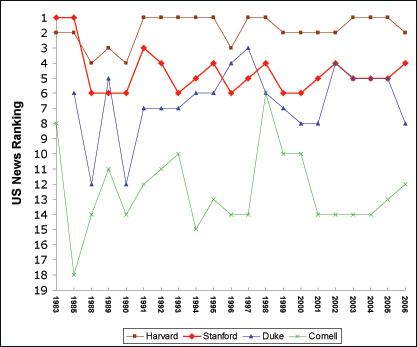
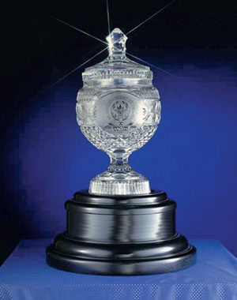

Stanford Fourth in US News Rankings
Stanford moved to fourth in the 2007 edition of the U.S. News and World Report undergraduate college rankings, “America’s Best Colleges”, highlighting the Stanford Class of 2010, which, while not included in the rankings, set records for highest yield, lowest acceptance rate and highest numbers of applications to Stanford in its 115-year history.
An Early Introduction To Liberal Bias
In mid-summer, I received the three books for Stanford’s Summer Reading Program for incoming freshmen. Individually, I found the stories well-written and engaging: Tracy Kidder’s Mountains Beyond Mountains is a tribute to a selfless doctor who treats Third World patients. Julie Orringer’s How To Breathe Underwater is a collection of teenage adventure stories. And Khaled Hosseini’s The Kite Runner is a story of a man who lives through the tumultuous events of 20th century Afghanistan.
Door-to-Door Critical for Publications
In the coming weeks, Stanford undergraduate students in each dorm must vote on whether student publications can distribute to their doorstep. A vote in favor of door-to-door distribution in residences could dramatically enhance the readership and relevance of small student publications at Stanford. For several years, small publications have struggled with a prohibition of door-to-door distribution enforced by many Resident Fellows (RFs). The prohibition forced many publications to resort to the use of centralized distribution locations, which students often overlook.
“Pizza maker is a grumpy old bastard”
Like many college students, I consider myself somewhat of a pizza aficionado. Yet, even with my years of cultivated experience, I would be hard-pressed to find pizza in the United States so gratifying to the taste buds as the pizza I enjoyed last week at Papasito’s in Antigua, Guatemala. I am relatively sure that pizza is not considered traditional Guatemalan food and Papasito’s, like so many of the shops and restaurants I visited in Antigua, strikes a balance between local and foreign cultures.
Editor's Note: The New, Improved Review
The staff of The Stanford Review labored hard throughout the summer in order to debut an excitingly new publication. The Review’s layout, distribution plan, website, and internal organization have all undergone great changes to appeal to a wider audience from within the Stanford community.
Forsyth reigns supreme
There are two reasons why people should read books: to have fun and to learn. If you are neither having fun nor learning anything, you are wasting your time. Frederick Forsyth, the best-selling author perhaps best known for his first novel, The Day of the Jackal (which served as the basis for the Bruce Willis assassin flick), returns with a fast-paced tale set in the context of the war against terror. The Afghan is sure to both educate and thrill the reader.
The Rise of Bahá’í: A Protestant Islam
Bahá’í, a faith relatively unknown in the West, is gaining global prominence. Its unique religious culture has an emphasis on the global community. With 7 million members worldwide, the largest centers of Bahá’í are in India, Iran, and the United States. Leaders of the faith recently initiated plans to expand the infrastructure of the religion with a specific focus on raising youth awareness, although Bahá’í strictly outlaws forced conversion and advocates religious tolerance.
|
Stem Cell Debate Impacts Stanford
Bunch of undifferentiated cells, or human being? The controversy of stem cell research has never died, but it came swinging back into the picture this July when President Bush exercised his veto power for the first time, banning federal funding to any stem cell research not in existence before 2001. President Bush stated in his letter to the House of Representatives, “if this bill were to become law, American taxpayers for the first time in our history would be compelled to fund the deliberate destruction of human embryos.”
Reconsidering American Progress in Iraq
On the 5th anniversary of the September 11 th attacks, and well into year three of the War for Iraq, it is important to take stock of what we’ve done right and wrong, and where we go from here. I will not attempt to recreate the masterful and comprehensive summary provided by The Economist recently, but will focus instead on the American experience in Iraq—an effort that has gone from expected triumph to our nation’s collective sigh of disappointment and frustration. This is the first of several articles which will attempt to discuss the war’s history and significance, and explain why we should not abandon the effort despite its evident setbacks.
Where’s Stanford Stadium And How Should I Vote?
You know us when you see us: Wide-eyed, walking about campus with our noses in maps, desperately trying to find that first class of the year while cautiously befriending new people. Alternatively, we strut about campus like we own the place, shouting hellos to people we hardly know, and often wind up lost (or many times reprimanded). We’re Freshmen.

Title IX Turns Thirty-Five
The athletics department at Stanford can appear deceivingly ideal. While consistently home to champions, men and women alike, Stanford cannot evade the subtle challenges of gender equality affecting many college athletics departments today.
Stanford Needs to Brag More
The biggest common flaw that emerges from our investigation of the U.S. News rankings and other major rankings is the inability to truly measure the outcomes of undergraduate education: how much students learn and grow, whether they are satisfied with their education, and how their education helps them in their further endeavors.
Is Peace Possible?
This has not been the most serene of summers on the global political stage. A massive terrorist plot uncovered in London has added one more security check to students’ flights back to school this fall; Israel deflected a double front of terrorist incursions from the Gaza Strip and Lebanon as Syria threatened war and Iran sustained its pursuit of nuclear technology; a coordinated attack on the mass transit system of Mumbai, India reeked of al-Qaeda; Thailand suffered continuing attacks in its far south; and prolonged UN flaccidity has emboldened the Sudanese government in its continuing oppression of minorities in its western province of Darfur.
An Uncertain Ceasefire Takes Hold in Lebanon
At 8:00 A.M. on the morning of Monday, August 14, Israel and Hezbollah ended 34 days of violence with a UN-brokered cease-fire. The cease-fire was but one stipulation of United Nations Resolution 1701, which the Security Council passed unanimously on August 11. The UN drafted and approved Resolution 1701 with the good intention of improving stability in Lebanon by disarming Hezbollah.
|


{kind=link}